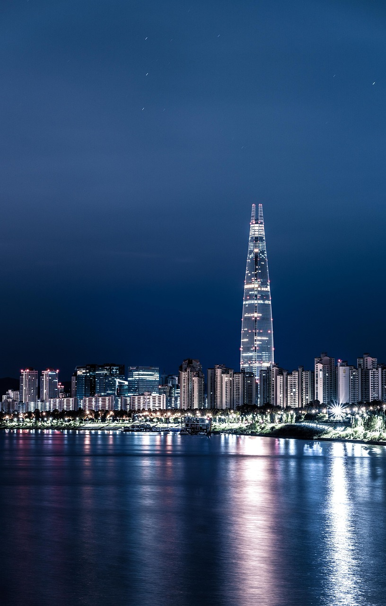
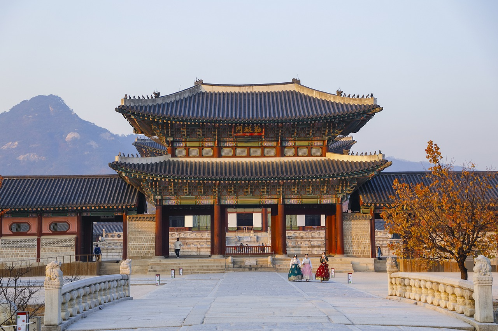

Capitale de la Corée du Sud, Séoul est une immense métropole
où les gratte-ciel modernes, les métros high-tech et la culture pop
côtoient les temples bouddhistes, les palais et les marchés de rue.
Les attractions notables incluent le futuriste Dongdaemun Design
Plaza,un palais des congrès aux formes courbes avec un parc sur
son toit,le palais de Gyeongbokgung, qui disposait autrefois de
plus de 7 000 pièces, et le temple Jogyesa,où se trouvent des
pins et des acacias plusieurs fois centenaires. Entre ses gratte-ciel
et ses maisons traditionnelles, son rythme effréné et sa sérénité,Séoul
est une ville aux multiples facettes qui ne cessera de vous surprendre.
Gyeongbokgung (경복궁, 景福宮), aussi appelé palais de
Gyeongbok,est un palais royal situé au nord de Séoul
en Corée du Sud.D’abord construit en 1394 puis reconstruit
en 1867, c'est le palais principal des cinq grands palais
construits sous la dynastie Joseon. Le nom du palais,
Gyeongbokgung, signifie «palais du Bonheur resplendissant».
Sa porte principale est la porte de Gwanghwamun .Presque
entièrement détruit par le gouvernement japonais au début du
xxe siècle, l’ensemble du palais retrouve petit à petit sa forme
originelle.Le palais Gyeongbokgung possède de nombreux
atouts culturels : ses murs en pierre, ses toits et ses statues
Haetae reflètent le degré d’avancement architectural de
la dynastie Joseon.Le pavillon Gyeonghoeru ( où se tenaient
des banquets pour les délégations étrangères et pour le roi et
ses dignitaires) et le bassin Hyanwonjeong (un endroit pour
la détente) sont considérés comme les plus beaux exemples du
genre en Corée. Ne manquez pas de visiter le Musée national
folklorique sssitué à proximité après votre visite du palais.
